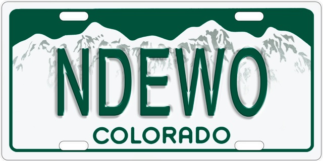

Ndewo, Colorado

|
My first chapbook of poems, 2013 Aldrich Press, available on Amazon, or directly from me (send me e-mail). 2014 Colorado Book Award winner.
Listen for more on the title's meaning and pronunciation. |
In his poetry, he blends his love for the environment and the Rocky Mountain region, his scientific know-how and his passion for language, telling concise stories that delight both the left and right sides of the brain."—Westword 2015 Award Winner, "Best Environmental Poetry"
"His experimentation with form and language are both challenging and fascinating."—Flatirons Literary Review
Some poems in this book have already been published elsewhere, so enjoy this preview. In some cases the book versions are updated.
About the authorUche Ogbuji (@uogbuji) born in Calabar, Nigeria, had lived, among other places, in Egypt and England, but never anywhere longer than 3 years in his life until he came to Colorado. Here he was instantly smitten by the mountain landscape and cultural flavor, and is settled near Boulder with his wife and four children. Educated mostly in Nigeria, Uche is a computer engineer and entrepreneur whose abiding passion is poetry. Uche's poems, fusing Igbo culture, European Classicism, U.S. Mountain West setting, and Hip-Hop, have appeared widely, mostly online, matching his professional interest in the Web. Uche was a founding poetry editor at Kin Poetry Journal and The Nervous breakdown. He is co-host, with Kierstin Bridger, of the Poetry Voice Podcast. |
